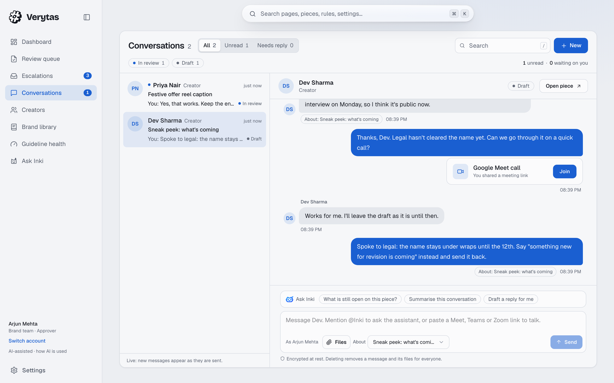
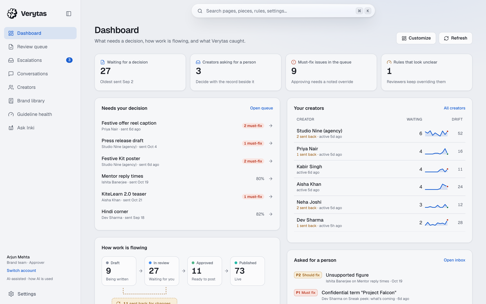
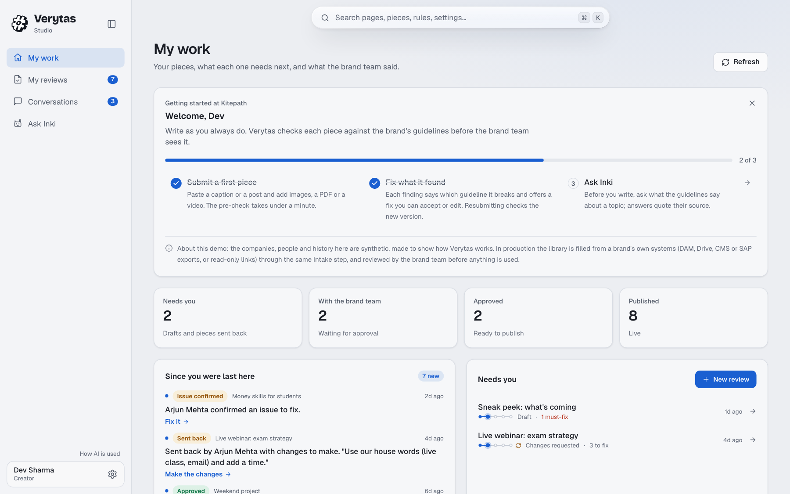

Brand review that shows its work: every post, image, document and video checked against the brand's own rules and facts before it is published, with a person making the final call.
Verytas is a review gate between a finished draft and publishing. A creator submits a post; Verytas finds and explains each problem with the rule or fact behind it and suggests the smallest fix; the brand team approves or sends it back, and every step is recorded. In Round 3 we delivered the three improvements we committed to, with one part left out on purpose and explained, and spent the rest of the time on reliability.
3 of 3
committed improvements delivered. Masked-number calls and the GPU are left out, and Section 2 says why.
Section 2
96%
of official-artwork misuse caught, with 4.7% false alarms on 1,200 scenes; recoloured app icons 24 of 24 (33% at Round 2).
backend/evals/results/assets.md
785
backend tests run offline on every push (630+ at Round 2), plus type checks, lint, a production build, a secret scan and dependency audits.
GitHub Actions
Open verytas.pages.dev, pick a person at Kitepath (a made-up online learning brand with eight weeks of history) and follow the short tour. Creator and brand team are one click apart through Switch account.
Try it in five steps
As Dev Sharma (creator), open My reviews, paste "Kitepath has 2 million learners. Guaranteed results!" and run the review. The figure is checked against the approved fact (1.2 million) and the promise is flagged, each with its rule, a fix and a confidence.
Apply the fixes and send it for approval. A reading you disagree with can be disputed with a reason, or escalated to a person.
Switch account to Arjun Mehta (brand team). The dashboard opens on what changed since you were last here; the piece is in the review queue, ranked by what needs attention first.
Talk it through. Open Conversations beside the piece: messages, files, and a Meet, Teams or Zoom link that becomes a Join card. Ask @Inki about the record once both sides agree.
Decide. Approve, or send it back with the fixes asked for. Back as Dev, the news is already on the dashboard and the badge, without a reload.
The review screen: each issue marked in place, ranked must fix to consider, with the rule behind it, the suggested fix and the steps from written to published.
Section 2
02The three improvements
What we committed to at the end of Round 2, what was built, and the one part of each we chose not to build, with the reason.
1
Creators and managers talk it through
Committed: one-on-one meetings between a creator and their manager by chat, voice or video, with only the time, the way and an outcome recorded against the reviews.
Built:Conversations beside each piece, laid out as an inbox: chat bubbles for both sides, replies, edits and deletes, files, unread counts and live delivery. A Google Meet, Teams, Zoom, Skype, Jitsi or Whereby link becomes a Join card, so a call starts in one click on a free app people already use. Messages are encrypted at rest. @Inki answers questions about the record once the asker agrees to it reading the thread, and recalls the earlier turns a question depends on. The thread itself, with its times, sits beside the piece it is about, so it is the meeting's record and needs no separate log.
Not built, on purpose: voice through masked temporary numbers. Telephony is separate, paid infrastructure (number rental, per-minute charges, carrier rules); for a prototype it is costly and adds little over the meeting apps both sides already have.
2
Sharper vision and speech
Committed: recoloured icons caught by separating shape from colour, a Hindi and Hinglish speech model, a GPU that wakes on demand, and before and after on the same benchmarks.
Built:
Recoloured app icons are now found by their outline when the colours are swapped: 33% to 100% (24 of 24), and artwork misuse overall from 92.9% to 96.0% with false alarms unchanged at 4.7%.
Mascots: the segmentation cut-out is checked and repaired before the comparison, and a stretched body is named. False alarms on acceptable characters 64 to 50 of 180; stretched bodies caught 0 to 18 of 30.
A vision worker that wakes on demand: the mascot models run on a second instance that starts when a review needs it and stops after 20 idle minutes. In judging hours (9 AM to 9 PM IST, 31 Oct to 13 Nov) a timer keeps it awake under a hard 10 USD cap, so a judge does not wait for a boot.
Before and after are published in backend/evals/results/assets.md and mascots.md, on the same scenes as Round 2.
Not built, and why: the GPU. AWS refused our GPU quota request twice, so every model runs on CPU or on the remote service as before. The stronger Hindi speech model needed that GPU to run in reasonable time and was dropped with it; codenames said aloud in Hindi are still caught by matching their sound.
3
The Brand Console runs it
Committed: an approved-people tab with agreement dates, a video timeline with findings as marks, and managers marking a video moment or an image area with comments the creator sees in place.
Built, all of it:
Approved people in the Library: who may appear in content, the kind of agreement, its channels and dates, private notes and the reference photos faces are matched against. Each card says where the agreement stands today; dates extend and agreements turn off in place.
Video in the review: each finding is a mark on the timeline at its moment; picking it there or in the list seeks to it. Drag along the timeline to comment on a stretch; speed runs from 0.5x to 2x. No download, picture in picture or casting.
Image markup: a marker in four thicknesses, an eraser and text labels, saved with a written comment. Pinned comments and their drawings show in place for both sides.

Conversations: the brand team's inbox, and a thread with a creator about a piece, with a Google Meet link shown as a Join card.
Section 3
03Everything else since Round 2
Beyond the three improvements, the work went into closing loose ends from Round 2's declared gaps, what first-time users hit, and what our own reviews found. Every item below is live.
Addition
What it does
Each side hears what it waits on
The dashboard opens on "Since you were last here": approved, sent back, escalated, disputed, commented. A short notice fades in on sign-in, and badges on My reviews and the Review queue move within a second of a decision, with no reload (measured 30 to 105 ms locally).
Ask Inki looks things up
Instead of answering from a fixed summary, Inki looks up creators, escalations, rules, facts, events, people and pieces as the person asking, so "which creators drift furthest from the brand" is answered from the data. It never sees more than that person's own screens.
Ask Inki remembers how you work
What you tell Ask Inki about your role and style is kept for you alone; Settings shows it and forgets it. An early decision in a long thread now reaches Inki in about 3 in 4 conversations it was never tuned on (0% before).
Performance after publishing
Once a piece is live, its link and the platform's numbers (typed or imported from a sheet) are recorded; Guideline health compares how posts that broke each rule did.
Personal tokens and MCP
A personal token lets Claude or any MCP client search, read and submit as you, never approve. Closes a Round 2 gap.
Web evidence for unbacked claims
On a public post, a claim no fact backs gets web results, English pages from known news, business and government sites that name the brand. Evidence for the reviewer, never a verdict.
Decks and Word files read fully
Speaker notes and table rows from slides and Word files. Measured against LlamaIndex's file readers before deciding to keep ours (Section 6).
A cleared finding stays cleared
When the creator checks a piece again, a finding the brand team already cleared is carried onto the new review instead of being asked again.
Guideline health ring
Rule clarity as a 3D ring; each rule keeps its numbers, advice and a clearer-wording draft from its own decided cases.
First visit
A landing page, a guided tour that covers Conversations and marking the spot, a cookie bar (accept all or necessary only), and a pass over every page at phone width (390 px).
Errors in plain words
A failure never shows raw HTML, a traceback or a parser's message; every error reads as a sentence with a next step.

The brand team's dashboard: "Since you were last here" beside what needs a decision, with live badges in the sidebar.

The creator's dashboard: news from the brand team beside what needs them.
Section 4
04Full feature list
Everything a judge can use on the live demo, by area. R3 marks what was added in Round 3.
Area
Features
Reading a post
Caption; text inside images (local OCR); every page of a PDF or Word file; every slide with speaker notes and tables R3; every sheet with cell addresses; HTML pages and emails; video: on-screen text, burned-in captions, subtitle tracks and speech (local Whisper). A creator's brief, typed or as a voice note.
Checks
Approved facts with validity dates (figures and dates compared in code); banned and preferred words; confidential terms, also when misspelt or said aloud; legal patterns; tone and messaging; hidden meaning that needs context (digs, sarcasm, double meanings, Hindi phrases); accessibility (alt text, contrast, hashtags, link text, captions, emoji runs); AI-disclosure rules; parts that disagree (caption against poster, voice-over against screen).
Pictures
Official artwork found and its misuse named: stretched, skewed, mirrored, recoloured R3, redrawn, cropped; mascots found even when an AI redrew them, with what changed R3; faces identified and checked against agreements.
Each finding
The passage quoted and marked in place (caption, image box, page, slide, sheet cell, video moment); the rule or fact cited; a level (must fix, should fix, consider) and a confidence; the smallest fix, checked so the offer and call to action survive; past decisions on the same rule; web evidence for unbacked public claims R3; signed.
Creator (Studio)
Submit and re-check; apply fixes in one click or ask Inki for an edit; dispute a reading; escalate to a person; versions and a timeline; news from the brand team and live badges R3; Conversations R3; live post link and numbers R3.
Brand team (Console)
Customisable dashboard with news R3; review queue ranked by risk; walk-through bar with keyboard shortcuts; approve, send back, override with a written reason; escalation inbox; video timeline and image markup R3; creators and their drift from the brand; Guideline health with clarity ring R3 and performance per rule R3.
Brand library
Intake: hand over PDFs, Word, decks, sheets, images, video or a read-only link, and approve drafted rules, facts, codenames and artwork; rules with versions; dated facts; confidential terms; artwork; approved people R3; brand events that update rules; public contacts.
Ask Inki
Answers from the record with lookups R3, charts and tables in answers, memory per person R3, saved chats, summaries of a review; in conversations on consent R3.
Getting started
Landing page R3; demo person picker; sign-up for your own empty workspace; guided tour per side; first-steps checklist; search across pages, pieces, rules and settings; light and dark themes; phone layout.
Integrations
REST API; MCP endpoint with personal tokens R3; CSV import of post numbers R3.
Section 5
05Architecture
Two web apps share one codebase and one API. Prism, the review engine, looks at what a submission contains and spawns an agent for each part. Rules run in code first; models only judge meaning, and only after confidential terms are removed.
Figure 1. Architecture as built. Text found inside an image, on a slide or in a video's speech goes back through the same checks as a caption, and each finding points to where it was found: image region, page, slide, sheet or video time.
How Prism checks a post
Prism is orchestration written in code, not a model choosing its own tools, so the same input always gets the same checks and a post cannot talk it into skipping one. A screenshot pasted on page 3 of a brochure gets a document agent, a page agent, an image agent, an OCR agent and then a text agent, which runs the same three workers as a typed caption: rule checks (code), a claim verifier (claims against dated facts, numbers compared in code) and a semantic judge (yes or no per rule, with a probability). Agents post the figures, artwork and people they find to a shared evidence board, and a cross-check agent compares the parts. Context layers then read the whole post, and the creator's note is weighed last. Depth and agent counts are capped; anything cut off, timed out or failed is shown as not checked, never as passed.
Models and where they run
Job
Model or method
Runs on
Judge questions, claim extraction
gpt-oss 20b
Ollama Cloud, redacted text only
Fixes, explanations, second look on must rules
gpt-oss 120b
Ollama Cloud, redacted text only
Describing images and comparing artwork
gemma4 31b
Ollama Cloud, never confidential content
Text in images and video
RapidOCR (PP-OCR on ONNX Runtime)
Our server, CPU
Speech
faster-whisper small and base
Our server, CPU
Artwork misuse
SIFT, RANSAC, SSIM, Lab colour, outlines
Our server, no model
Mascots
Grounding DINO, SAM 2.1, DINOv2
Vision worker, wakes on demand
Faces
YuNet and SFace
Our server, CPU
Inki's memory
bge-small-en-v1.5 and BM25 through mem0
Our server, CPU
Key decisions
Decision
Why
Rules before models
Facts, words, codenames and artwork are checked in code. Only a model-free check can block a post; a model's reading caps at a warning, because content can be written to sway a model.
Media stays local
OCR, speech, PDF rendering and artwork matching run on our CPU; only redacted text and pixels reach a model.
Pull-based deploys
The server pulls a branch only green CI can move, builds beside the live release, health-checks it and rolls back on failure.
One cheap server
One small ARM instance in Mumbai behind a free edge, a vision worker that sleeps, and a hard AWS budget cap.
Section 6
06How well it works
Each engine is measured on its own benchmark through the production code. Where a number moved, the change that moved it is named; every row links to its method and full results in backend/evals/results.
Engine
Tested on
First run
Now
What moved it
Artwork misuse
1,200 scenes
75.8% caught, 27.2% false alarms
96.0%, 4.7%
Stretch and skew measured from the match's geometry; artwork compared as it would look in the image; outline matching for recoloured icons R3
Recoloured icons
24 scenes
29%
100%
Shape separated from colour R3
Mascot false alarms
180 acceptable
105
50
Fidelity tuning (to 64), then cut-out repair R3
Mascot stretched body
30 scenes
0
18
Stretch from the fitted map R3
Video artwork, right moment
45 planted
15
32
Artwork judged frame by frame; subtitle tracks read
Suggested fixes useful
73 findings
45%
82%
Fixes built from operations that fit the rule, passed by a gate that knows the rule, one repair round
Must-rule judgement
32 sentences
27/32
30/32
Both judges asked, the larger decides
Black-box recall
216 cases
78%, 7% false alarms
96%, 0%
Fixes from what the simulator missed
Inki's memory
28 long threads
0%
about 75%
Recall over earlier turns R3
Slides: text and notes
24 sentences
18
24
Speaker notes read R3
Word and slide tables
9 rows
0
9
Tables kept as rows R3
Claim web evidence
17 demo claims
84% unknown sites
known sites only
English, known sources, names the brand R3
Text in images
240 images
88% of prices, codes and names read exactly
Measured once
Speech
104 clips
about 10% word error in English
Hindi much weaker; codenames matched by sound
Parts that disagree
28 posts
14/14 caught, 0 false alarms
Measured once
Our document readers against LlamaIndex R3
Before keeping our own readers we measured them against LlamaIndex's default file readers (free and local) on the same generated brand kit with known content. LlamaParse, its paid cloud parser, was ruled out because it would send confidential guidelines to a third party.
Test
Ours
LlamaIndex
PDF and Word table rows kept together
13/13
0/13
Excel values with their cell address
111/111
0/111
PowerPoint text and speaker notes; table rows
24/24; 3/3
24/24; 3/3
Scanned PDF
Says it is a scan
Empty, no warning
300 MB spreadsheet bomb
Capped: 0.1 s, 39 MB
Read in full: 36 s, 2.9 GB
The sets are generated or hand-labelled rather than live traffic, and some thresholds were set on them, so real-world figures will run somewhat lower.
Section 7
07Testing and reliability
Round 3 asks that it survive bad input, empty states, a refresh and a double click, and that a stranger can finish the main journey and run it from the README. This is how we checked each.
Check
What it covers, and the result
Automated tests
785 backend tests, offline with no keys, on every push, with type checks, lint and a production build of the web app, a secret scan and dependency audits. Main only moves when all of it is green.
Bad input on every route
A test sends every API route malformed input as every role and fails on any server error; ids past 64 bits, oversized files and wrong types answer with a 4xx and a sentence.
Black-box simulator
Knows Verytas only through its public API and steers each round toward what it misses: 96% recall, 0% false alarms on clean posts, 0 server errors at 12 parallel submissions (17 before), and 320 cases at 32 in parallel run clean.
Reviewed before commit
Every batch of changes was reviewed for bugs and security issues before it was committed. In Round 3 that raised 217 findings: 212 fixed, 3 kept on purpose with a reason, 2 declined.
The live site as every person
Every page loaded and refreshed as each demo person: no console errors, no server errors, no error screens. A double click makes one piece, a refresh mid-review resumes, and empty pages say why and what to do next.
Phone width
A pass over every page at 390 px, fixed where anything overflowed or was cut off.
Speed on the live site
API reads 63 to 114 ms (the network alone is about 60 ms), pages settle in 0.2 to 0.7 s, reviews take 6 to 23 s, a message reaches the other side in about 0.1 s and a decision in about 0.2 s.
Clone and run
A fresh clone of the public repository, with no keys, followed the README to a running API, web app and seeded demo.
Tried by people
Three first-time users used the live demo on their own. Every point they raised has a shipped change: the tour, plain-word help on every status, "how it was checked" on every result, progress while a review runs, next steps on empty pages (docs/research/user-testing.md).
Failures we found and fixed in Round 3
Unreadable messages after a demo reset: a cache outlived the reset and served pages sealed with the old key. Cached pages are now keyed by the message key's fingerprint and served only when they match the latest message.
A cleared finding came back when the creator ran the check again; the brand team's decision is now carried onto the same issue.
Slow reads under load: readers took SQLite's write lock; p99 fell from 850 ms to 53 ms once they stopped.
A fresh clone showed sample data: the clean-clone check found that the seed wrote the demo tokens but not the API address, so the web app fell back to its labelled sample data. The seed now writes the address too, and a test covers it.
Section 8
08Security and responsible AI
A security review ran on the code and the live site; each finding is fixed with a regression test or listed as open in docs/security/README.md.
Area
How it is held
Signed and logged
Every finding is signed (Ed25519) and every action goes into a SHA-256 hash-chained audit log, so an edit shows.
Confidential terms
Redacted from text and blacked out in images before any model sees them; matched in part and by sound.
Hostile input
File types read from the bytes, Office files parsed with entity expansion off and every part capped, documents converted in a sealed service with no network, web pages rendered with no scripts, and instructions aimed at the AI refused.
Conversations R3
Messages sealed at rest with AES-GCM; a creator sees only their own threads; Inki answers only on consent, sees only that thread and pieces both may open, and has an hourly limit.
Ask Inki R3
Lookups run as the asker, confidential tier left out, arguments never un-redacted, at most 4 rounds and 600 lookups an hour; a request for its instructions gets a fixed answer.
Memory R3
Only from a person's own Ask Inki chats, only they can list or forget it, and forgetting removes it from disk (checked by a test).
MCP tokens R3
Stored hashed, refused by the REST API, read and submit only, capped at internal clearance and rate limited.
People in charge
A model-only finding never blocks; every override needs a written reason; every page says when a check was degraded or not run.
Section 9
09Known limits
What a judge may run into, stated plainly.
Area
What to expect
Generated benchmarks
Every figure in Section 6 comes from generated or hand-labelled sets, some of which thresholds were set on. Real traffic will score lower.
Mascots on busy backgrounds
The cut-out still takes in background, so 50 of 180 acceptable scenes raise a false alarm (21 with a perfect cut-out). A vision opinion alone never blocks a post.
Hindi speech
Transcribed with much error on CPU. Codenames are caught by sound; other Hindi claims less reliably.
Long threads
A decision changed late in a long conversation reaches Inki in about half to two thirds of hard cases.
No voice calls inside Verytas
Calls run on Meet, Teams or Zoom through Join cards (Section 2).
Post numbers
Typed or imported from a sheet, not read from the platforms.
Speed
Models run on a remote service without our own GPU. Text takes seconds; images, documents and video take longer. If the service is down, those checks show as degraded, not passed.
Shared demo people
Every judge signs in as the same sample people, so you may see what other visitors submitted. Ask Inki's memory for them is per browser and lapses after a day.
Your own workspace starts empty
A new company has no rules, facts or artwork until some are added or a brand book is handed to Intake. The sample company shows everything working.
Section 10
10Roadmap
In the order we would build it, each with the measurement that says whether it worked.
#
Next
Why, and how we would know
1
A GPU once AWS grants the quota
Runs the language, vision and Hindi speech models ourselves: faster reviews, content that never leaves our servers, and a Hindi speech model. Measured on the same speech and video benchmarks.
2
A better segmenter for mascots
Most remaining mascot false alarms come from the cut-out; a perfect one would take them from 50 to 21 of 180.
3
Performance from the platforms
Instagram's insights first, so live numbers no longer need typing, and Guideline health compares rules on real reach.
4
Measured on real traffic
A pilot brand's decided reviews become the benchmark, replacing generated sets, and calibration learns from real reviewers.
5
Where people already work
Slack and email notifications, a CMS hook that holds a post until it is approved, and single sign-on.
6
Scale out
Postgres (the code is ready for it) and more than one API worker behind the same Redis, once one server is no longer enough.
Section 11
11Team and links
Both members committed from their own accounts, so contributions are visible in the repository history.
Member
Round 3 contribution
Prajyot Malesh Kotekar Team leader
Led the team and the submission. Built Guideline health's rule clarity ring and its link to each rule, the brand-team note creators see on the creators page, and the fix that brings an escalation answer given after a re-check to the finding the creator sees. Tested the live demo and reported the bugs fixed in the last days.
Varadaraj J Borkar
Built Conversations and @Inki, Ask Inki's lookups and memory, the video player and image markup, approved people, the recoloured-icon and mascot work and their benchmarks, news and live badges, performance feedback, the MCP endpoint, the landing page, the document readers and their comparison, and the server, deploys and vision worker.
Together
The review workflow, the API, tests and documentation.